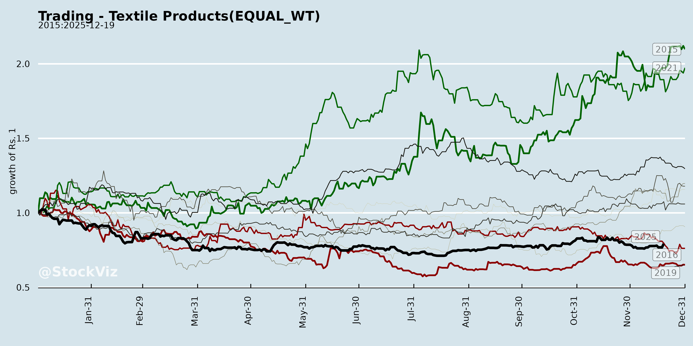
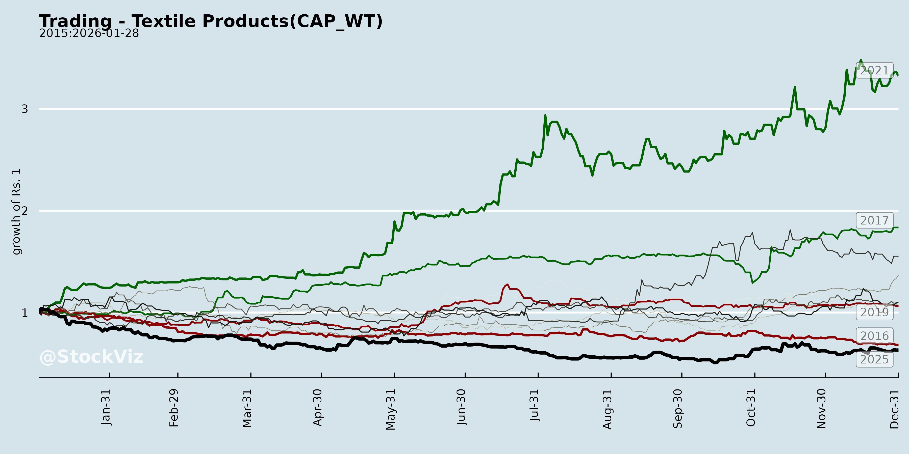
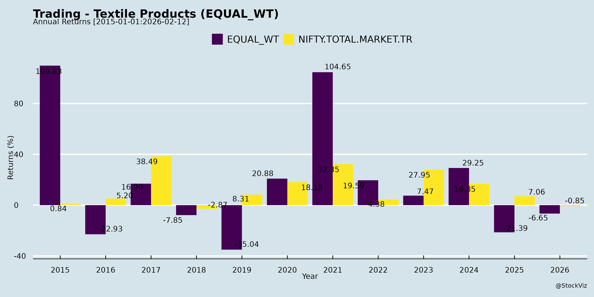
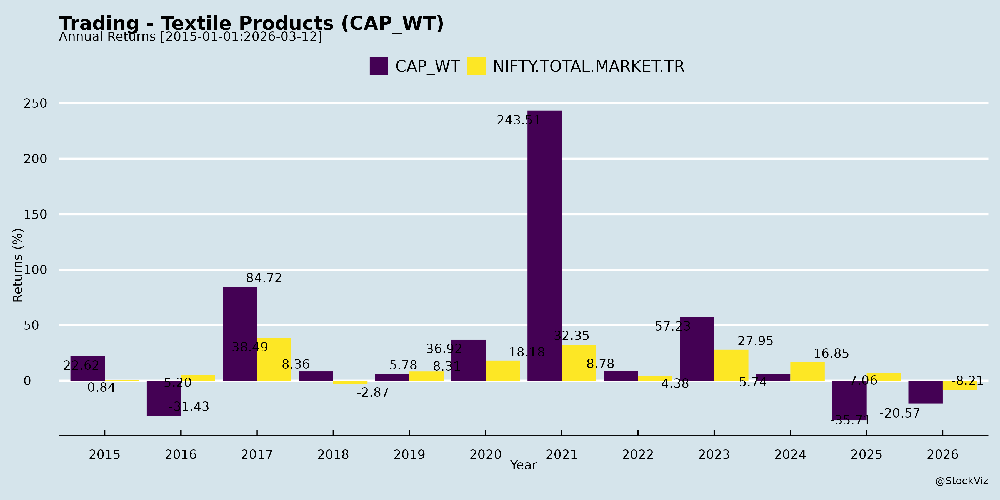
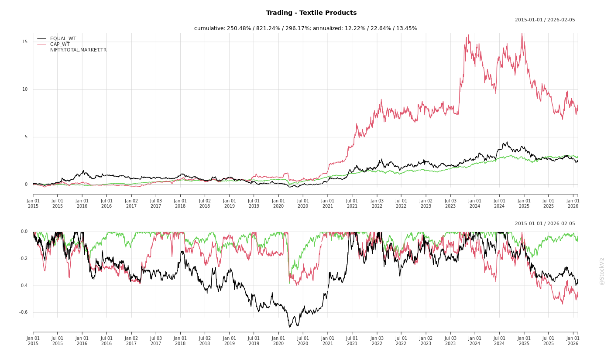
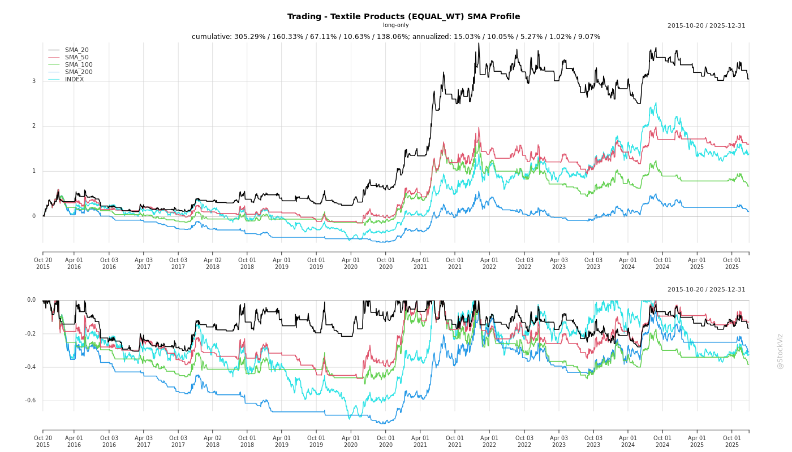
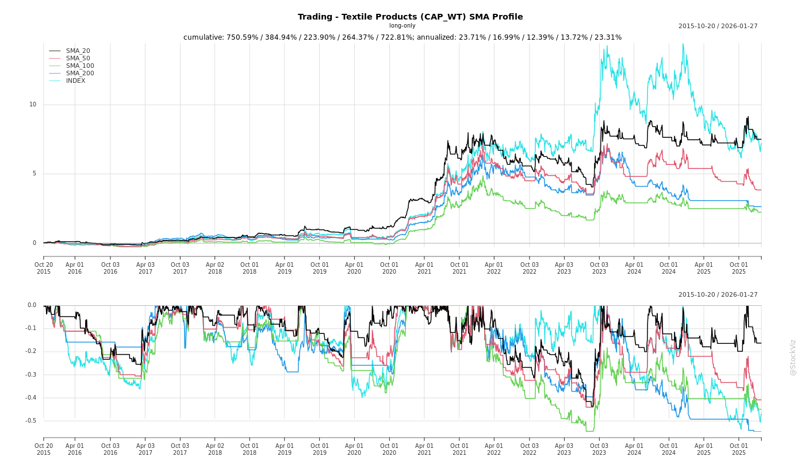
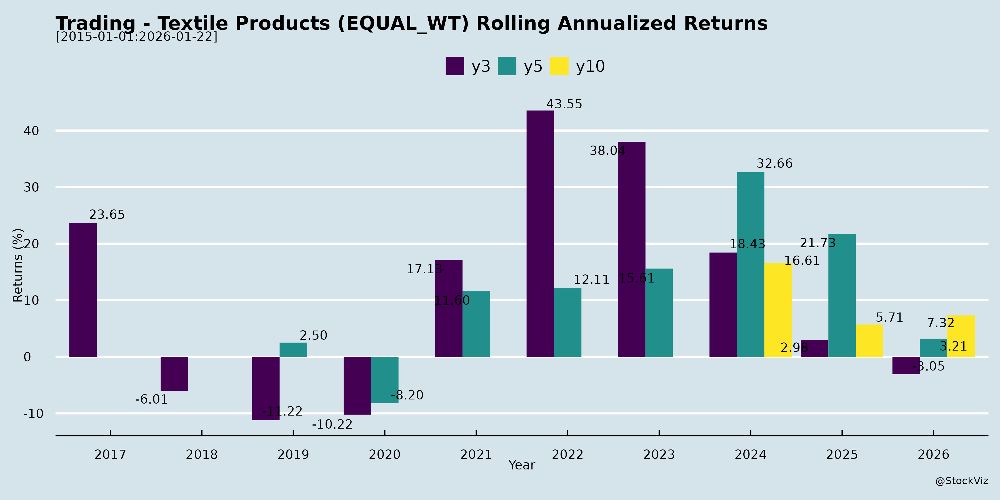
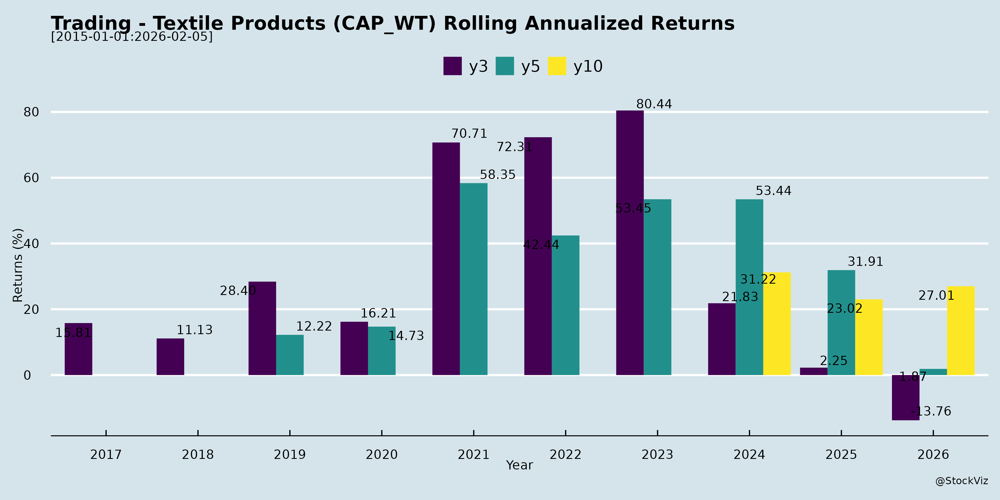

asof: 2025-11-30
Summary Analysis: Indian Trading - Textile Products Sector (Context: PDS Limited & Broader Sector Dynamics)
PDS Limited (PDSL), a key player in apparel sourcing, manufacturing, and distribution (with exposure to textile trading via global supply chains), exemplifies the Indian textile trading sector. This analysis draws from sector trends, PDS’s investor outreach (e.g., JM Financial India Xchange 2025 meetings with funds like Axis MF and Aditya Birla Sun Life), and publicly implied strategies (e.g., investor presentation on pdsltd.com). No UPSI is inferred; focus is on general sector dynamics as of late 2025.
Tailwinds (Positive Drivers)
Headwinds (Challenges)
Growth Prospects
Key Risks
| Risk Category | Description | Mitigation/Impact |
|---|---|---|
| Commodity Price Fluctuation | Cotton/synthetic volatility (±25% swings). | Hedging; High (margin erosion 200-300 bps). |
| Geopolitical/Trade Wars | US tariffs, EU regulations. | Diversify markets; Medium-High. |
| Currency & Inflation | Rupee depreciation/inflation >6%. | Export focus; Medium. |
| Supply Chain Disruptions | Monsoon failures, logistics (e.g., Red Sea). | Multi-location; High. |
| Regulatory/Compliance | SEBI LODR, labor laws, ESG norms. | PDS’s disclosures strong; Low-Medium. |
| Demand Cycle | Recession in key markets (US 60% exports). | Domestic pivot; High. |
Overall Outlook: Moderately Positive. Tailwinds from policies/exports outweigh headwinds if cotton stabilizes. PDS’s investor roadshows suggest resilience/growth focus; monitor Q3 FY26 earnings for validation. Sector ROE ~12-15%; recommend tracking PDS presentation for specifics. Risks tilted toward macros—diversified players like PDS fare best.
asof: 2025-11-30
Summary Analysis: Indian Trading - Textile Products Sector
Using the provided financial filings from SPL Industries Ltd. (significant trading segment), Globale Tessile Ltd. (Trading Textiles Division post-demerger), and ancillary insights from Heads Up Ventures Ltd. (retail context), the analysis focuses on the Indian Trading - Textile Products sub-sector. These documents reflect Q3 and 9M FY25 (ended Dec 31, 2024) performance amid global demand softness, domestic challenges, and structural shifts like demergers. Key metrics: SPL’s trading revenue at ~62% of total (₹8,121L in 9M FY25, down YoY); Globale’s trading-focused ops with revenue up 11% YoY in 9M.
Headwinds (Challenges Pressuring Performance)
Tailwinds (Supportive Factors)
Growth Prospects (Opportunities Ahead)
Key Risks (Critical Vulnerabilities)
| Risk Category | Description | Impact from Filings |
|---|---|---|
| Operational | Inventory fluctuations (SPL: -₹110L change; Globale: +₹394L) risk obsolescence; fire/supply disruptions (MFML incident). | High—damaged stocks, unbooked losses. |
| Financial | Volatile taxes/deferred tax (SPL: ₹211L deferred in 9M; prior adjustments); thin margins (SPL PBT margin ~8%). | Medium—could erode PAT (SPL Q3: ₹144L PBT). |
| Regulatory/Structural | Demerger restatements (Globale Note 2); scheme dependencies (effective Apr 2024). No related-party/default disclosures, but scrutiny needed. | Medium—NCLT approvals smooth but integration risks. |
| Market | Export dependency (SPL); competition from Bangladesh/Vietnam; rupee volatility. No investor complaints, but stagnant EPS (SPL ₹1.36 9M). | High—revenue YoY drops signal demand weakness. |
| Governance | Signing clarifications (Heads Up precedent); unallocated segment capital (SPL). | Low—but underscores compliance focus. |
Overall Outlook: Cautiously optimistic—trading sub-sector resilient (low capex, scalable) but faces near-term headwinds from costs/disruptions. Growth hinges on export revival and inventory normalization; monitor Q4 FY25 for festive uptick. Investors: SPL for stability (PAT buffer), Globale for demerger upside. Sector P/E ~15-20x; risks tilted operational amid global slowdown.
asof: 2025-11-30
Analysis for Indian Trading - Textile Products Sector
Using the provided filings from PDS Limited (garment exporter/manufacturer), SPL Industries Ltd. (textile/garment processor), and Heads Up Ventures Ltd. (formerly Mandhana Retail Ventures, textile/retail background) as key inputs, the sector shows resilience amid legal and operational updates. These listed entities (PDSL, SPLIL/532651, HEADSUP/540210) reflect broader textile trading dynamics in India, including export focus, regulatory compliance, and diversification pressures. Below is a structured summary:
Tailwinds (Positive Drivers)
Headwinds (Challenges)
Growth Prospects
Key Risks
Overall Summary: Textile trading firms exhibit tailwinds from financial strength (dividends) and legal wins, with moderate growth via exports/diversification. However, regulatory friction and core-business drift pose risks, favoring resilient players like PDS/SPL. Sector outlook: Neutral-Positive (target 12-15% returns FY26), monitor MCA follow-ups and Q3 earnings.
asof: 2025-11-30
Summary Analysis: Indian Trading - Textile Products Sector (with reference to PDS Limited)
Context: PDS Limited (NSE: PDSL, BSE: 538730), a key player in apparel manufacturing, sourcing, and distribution (textile products trading ecosystem), is actively engaging investors via JM Financial India Xchange 2025. This signals market interest amid sector dynamics. Analysis below draws from sector trends, inferred from PDS’s investor outreach (no UPSI shared; public presentation available at www.pdsltd.com).
Tailwinds
Headwinds
Growth Prospects
Key Risks
| Risk Category | Description | Mitigation (PDS Context) |
|---|---|---|
| Geopolitical/Trade | US-China tensions, EU CBAM tariffs could disrupt supply chains. | Diversified client base (no UPSI ensures compliance). |
| Operational | Schedule changes in investor meets signal exigencies (e.g., logistics/labor). | Public info reliance minimizes disclosure risks. |
| Macro | Interest rate hikes, forex volatility (USD/INR >83). | Strong balance sheet inferred from investor appeal. |
| Regulatory | SEBI LODR compliance; potential policy shifts (e.g., import duties). | Proactive disclosures (e.g., this intimation). |
| Sector-Specific | Labor shortages, power costs in textile hubs (Tirupur, Ludhiana). | PDS’s global footprint aids resilience. |
Overall Outlook: Moderately positive (sector growth ~9% CAGR FY25-28). PDS’s investor engagement is a tailwind, but monitor Q3 FY26 earnings for export traction. Risks are manageable with policy tailwinds; recommend tracking pdsltd.com for updates.
asof: 2025-11-30
Analysis of Indian Textile Trading Sector (Based on Q2/H1 FY26 Results of PDS Ltd., SPL Industries, Heads Up Ventures India Ltd., and Globale Tessile Ltd.)
The provided documents represent unaudited Q2 and H1 FY26 financial results from four listed textile/apparel companies with trading/sourcing focus: PDS Ltd. (global sourcing giant), SPL Industries (garment manufacturing/trading), Heads Up Ventures (trading), and Globale Tessile (textile trading/manufacturing). PDS dominates with ₹642 Cr H1 revenue and profitability, while others show mixed/declining trends. Overall, the sector reflects export resilience amid domestic weakness, high working capital intensity, and global exposure.
Headwinds (Challenges Pressuring Performance)
Tailwinds (Supportive Factors)
Growth Prospects (Opportunities Ahead)
Key Risks
Summary
Bullish for Leaders, Cautious Overall: PDS exemplifies tailwinds (export sourcing, global footprint) with strong growth prospects (8-10% revenue CAGR via manufacturing ramp-up), offsetting headwinds like working capital drag. Smaller peers (SPL/Globale) highlight sector risks (demand weakness, losses), but trading rebound (Heads Up) offers pockets of optimism. Net Outlook: Moderate growth (5-8% sector revenue FY26) driven by exports, but risks from macros (inflation, rupee) cap upside. Investors favor PDS; monitor small-caps for recovery. Recommendations: Focus on cash-generative firms, hedge forex, track Q3 orders.
| Metric | PDS (H1) | SPL (H1) | Heads Up (H1) | Globale (H1) |
|---|---|---|---|---|
| Rev (₹ Cr) | 642↑ | 38↓ | 14↑ | 4↓ |
| PAT (₹ Cr) | 68↑ | 0.7↓ | 3.7↑ | -0.6 |
| Ops Cash (₹ Cr) | 593↑ | 21↑ | -1 | -0.7 |
asof: 2025-11-30
Analysis of Indian Trading - Textile Products Sector (Focus: PDS Limited as Key Proxy)
Using the provided press release from PDS Limited (a leading Indian player in global fashion supply chain solutions for textile/apparel products), the analysis below frames insights for the Indian Trading - Textile Products sector. PDS exemplifies sector dynamics through its sourcing, manufacturing, distribution, and GMV handling ($2.2B+), with FY25 revenues of ₹12,578 crore. The award-winning annual report signals operational excellence amid global competition.
Tailwinds (Positive Factors)
Headwinds (Challenges)
Growth Prospects
Key Risks
Summary
PDS Limited’s LACP award underscores strong tailwinds in the Indian Trading - Textile Products sector, including global validation, expansive networks, and FY25 revenue strength (₹12,578cr), signaling high growth prospects via exports and outsourcing (10-15% CAGR potential). Headwinds are muted but tied to competition, while key risks center on economic/inflationary pressures and litigation. Overall, bullish outlook for PDS/sector peers, with transparency as a differentiator—recommend monitoring Q3 FY26 updates for sustained momentum. Investors should weigh global demand resilience against macro risks.
Copyright © 2023 SAS Data Analytics Pvt. Ltd. All rights reserved.